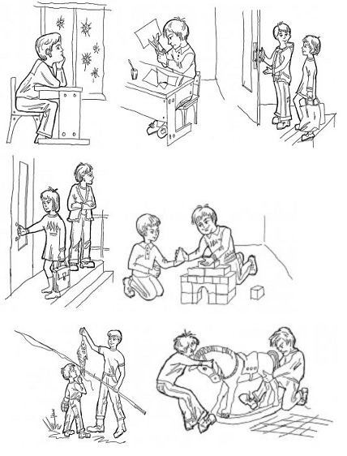

Шкалы: эмоциональное отношение к нравственным нормам
Ключевые слова: детям, мораль, невербальный, тест, школьникам, эмоции
Тестируем: Свойства личности · Возраст: Дошкольный, Младший школьный
Тип теста: Невербальный · Вопросов: 10
Назначение теста
Методика предназначена для изучения эмоционального отношения к нравственным нормам.
Описание теста
Ребенку предъявляют картинки с изображением положительных и отрицательных поступков сверстников.
Исследование проводится индивидуально. В протоколе фиксируются эмоциональные реакции ребенка, а также его объяснения. Ребенок должен дать моральную оценку изображенным на картинке поступкам, что позволит выявить отношение детей к нравственным нормам. Особое внимание уделяется оценке адекватности эмоциональных реакций ребенка на моральные нормы: положительная эмоциональная реакция (улыбка, одобрение и т. п.) на нравственный поступок и отрицательная эмоциональная реакция (осуждение, негодование и т. п.) - на безнравственный.
Инструкция к тесту
Разложи картинки так, чтобы с одной стороны лежали те, на которых нарисованы хорошие поступки, а с другой - плохие. Раскладывай и объясняй, куда ты положишь каждую картинку и почему.
Обработка результатов теста
Обработка предложена Р.Р.Калининой.
0 баллов - ребенок неправильно раскладывает картинки (в одной стопке оказываются картинки с изображением как положительных, так и отрицательных поступков), эмоциональные реакции неадекватны или отсутствуют.
1 балл - ребенок правильно раскладывает картинки, но не может обосновать свои действия; эмоциональные реакции неадекватны.
2 балла - правильно раскладывая картинки, ребенок обосновывает свои действия; эмоциональные реакции адекватны, но выражены слабо.
3 балла - ребенок обосновывает свой выбор (возможно, называет моральную норму); эмоциональные реакции адекватны, ярки, проявляются в мимике, активной жестикуляции и т. д.
Тестовый материал:
